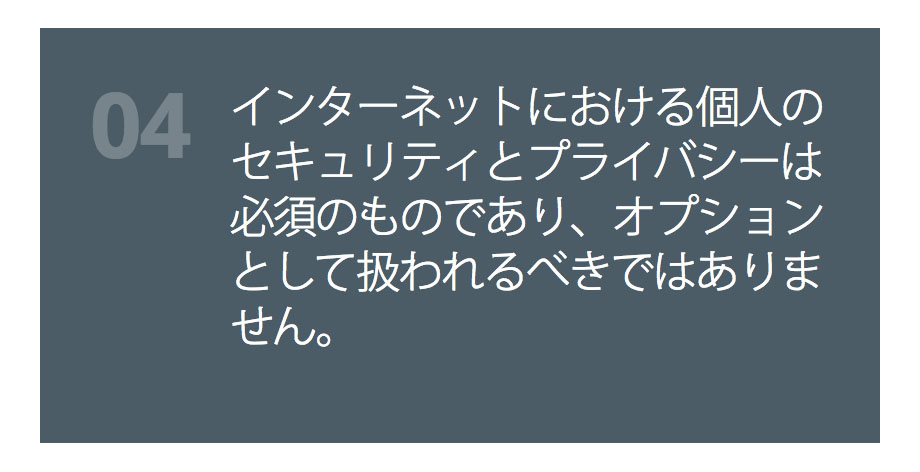

Staff Security EngineerMozilla Corporation
kmckinley@mozilla.com — gh/sigkate — @sigkate
San Francisco, CA
非営利法人
2004年に発足
https://mozilla.doorkeeper.jp/
https://www.mozilla.org/ja/about/manifesto/

https://webvr.info
https://mozvr.com/
https://aframe.io/